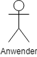
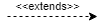
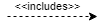

Ein UML-Use Case Diagramm (Anwendungsfalldiagramm) dient zur Veranschaulichungen der unterschiedlichen Interaktionsmöglichkeiten zwischen einem Benutzer und einem System. Unser Tool für UML-Diagramme unterstützt die Erstellung von Diagrammen in Profi-Qualität für praktisch jeden Anwendungsfall.
| Bild | Name | Erklärung |
|---|---|---|
|  | Akteur | Personen die etwas tun |
| Vererbung | Der Pfeil zeigt immer von der Person die erbt, auf die Person, von der geerbt wird! | |
| Handlung | Verbindet eine Person und eine Aktion | |
| Assoziation | Ein Anwendungsfall / Eine Aktion | |
|  | Extends | Erweitert einen Anwendungsfall |
|  | Includes | Import: Das Verhalten des Anwendungsfalls schließt das Verhalten des importierten Anwendungsfalls zwingend mit ein. |